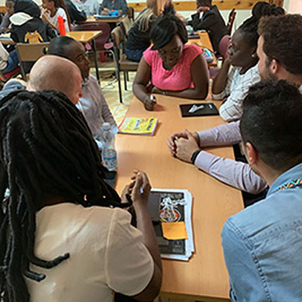
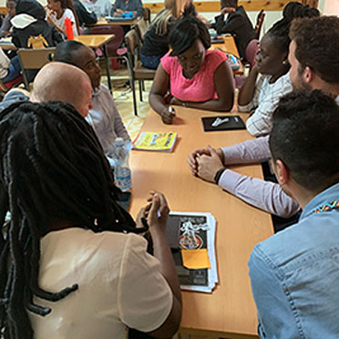

GOOGLE FOR STARTUPS TEAM

OUR EXPERIENCE AT THE GOOGLE FOR STARTUPS EVENT
On 23/03/2019, we were privileged to meet a team from the Google for Startups program.Having the oppportunity to meet some of the members of the Google for startups team was a priviledge to me and to the rest of me fellow ladies:as we prefer to be called.As the codehive cohort of 2019,the excitement and energy in the room was palpable.We were able to gain very useful insight regarding business ownership and the journey of entrepreneurship as a whole. It raised awareness on the fact that there is a lot of support for startups and that it actually is not as difficult to bring our ideas to life. Ideas were exchanged and advice was given to those who already have business ideas yet to be acted on. Some of the takeaways from the interactive session are that no one can take away your skill and that anything is possible, forget the excuses and just do it.
OUR ENCOUNTER AT THE GOOGLE'S AFRICA DAY OUTREACH: Creative Boot camp
Many times we hear the word ‘creative’ but for some reason, you can’t seem to put your finger on it. Courtesy of Google, we finally got the chance to explore deeply what being a creative really is. To get our creative juices flowing, we heard from some of the professionals in the industry. One striking piece of information that stood out is the convergence of art and science. To produce the best work, there must be a balance between the two.For the better part of Day 2 of the boot camp, we took part in group discussions trying to provide an efficient solution to the brief we were given. The whole experience was not just great, it was transformative as it enabled many of us to gain a different perspective of things, to reach within the deepest part of ourselves to be able to connect with our work.To know more about AkiraChix kindly click here
 
